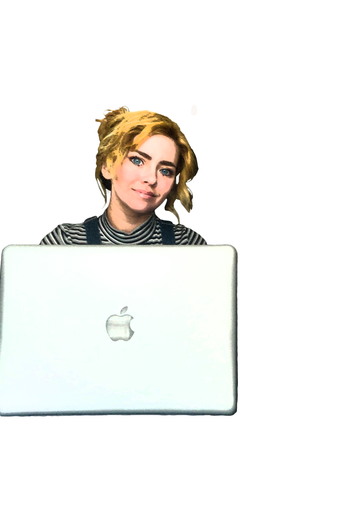

During my studies in Fine Arts, I fell in love with Web Development. I changed majors ,cut to a few years later, and received my degree in Graphic Information Technology from Arizona State University in 2020.
Alexandria Righetti is a Web Developer originally
grown in Lodi, California. Alexandria incorporates her background in color theory, typography study, and art history to devise light-hearted and
colorful websites. She refined her ability to create and design from her vocational
training while originally pursuing fine arts.
Her education boasts a Bachelor of Science degree from Arizona State University, an Associates of the Arts, and experiences in the art community.
A history volunteering with a department head for “Burning Man”, hosting an art show, and her live-drawing classes at a museum have allowed her to look at web development with new eyes.
Alexandria Righetti is a Web Developer originally grown in Lodi, California. Alexandria incorporates her background in color theory, typography study, and art history to devise light-hearted and colorful websites. She refined her ability to create and design from her vocational training while originally pursuing fine arts.
Her education boasts a Bachelor of Science degree from Arizona State University, an Associates of the Arts, and experiences in the art community. A history volunteering with a department head for “Burning Man”, hosting an art show, and her live-drawing classes at a museum have allowed her to look at web development with new eyes.
An attention to detail refined from collaborative experiences in her Fine Art work have aided in her understanding others' creative vision. She values adaptive, responsive designs and teaching her clients how to update and maintain there Web pages independently for success onward.
These values make her a valuable asset to businesses looking for a friend to grow their business beyond their collaboration. In her free time she still explores Fine Arts and attending museums. Her off days include reading, sketching, and recently, learning more about UX/UI Design.